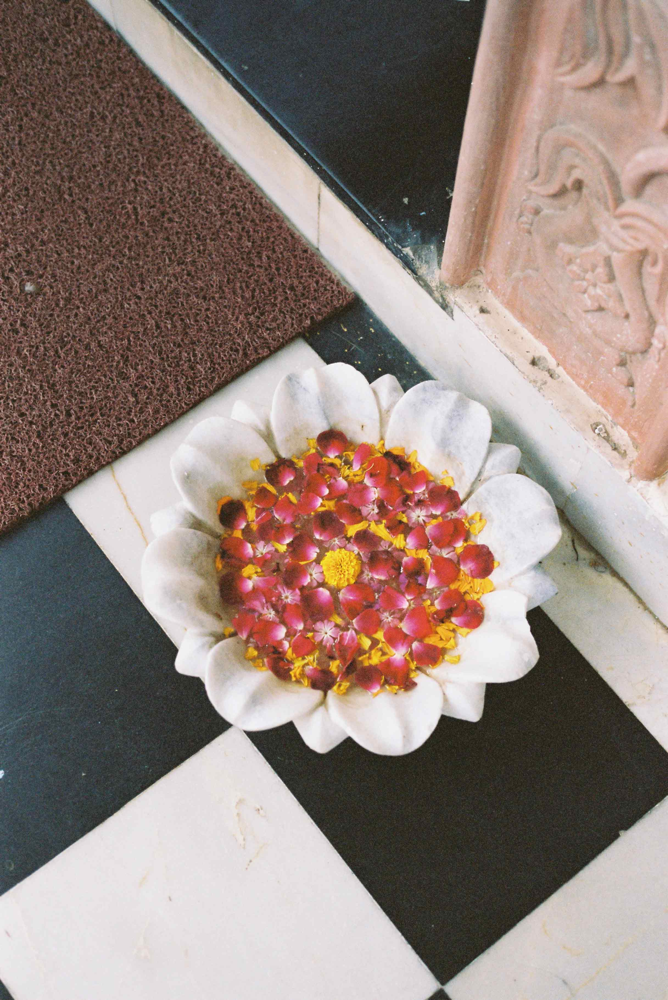

Core – Sprint 1
Personal Values, Strengths & Weaknesses
“My mom said to me, 'You know sweetheart, one day you should settle down and marry a rich man’.
And I said, 'Mom, I am a rich man.’” – Cher, 1996
Not a profound quote but every time I recall this Cher interview I laugh and think to myself: imagine telling someone like Cher, an extremely talented, capable, successful and driven artist who has been working hard her entire to settle down and take it easy –– to let someone else do the work!. This quote is little reminder for me to believe in myself and try to embody Chers iconic final boss energy.
Describe your core personal values -
I’m fairly attuned to who I am and what is most important to me. I am an honest (somewhat shy and self critical) person who values authenticity, honesty, creativity, loyalty, kindness, respect and good humour about all else. My strengths are that I’m hard working, trustworthy, reliable, consistent, efficient and organised.
A situation where you have had an ethical decision to make -
I worked for a company for a number of years that made quite a reputation for itself as having extremely toxic company culture. People were often not hired on merit, but because of who they were and how malleable they were to completely take on company ethos and embody the brand in all ways. I worked my way up through the company and found myself working in the head office, where I witnessed the senior management team berating and tearing down junior staff daily. It was a well paying, comfortable job but I couldn’t continue to work there knowing what was happening behind the scenes. In a some what difficult conversation with my boss I attempted to express concern for the things I was seeing and was stonewalled into silence. I made the decision to leave that work place and have never been prouder to walk away from something knowing it was the right thing for me and in line with what I deeply value — which is respect and kindness, trust and honesty to name a few.
Describe how your culture has influenced your values and identity -
I currently live on Waiheke Island in Auckland. I grew up in West Auckland near the Waitakere Ranges. My parents are both Afakasi from Western Samoa. I grew up in a single parent house hold with a strong female role model who worked very hard hours to make sure my brother and I were being provided for. I would say this work ethic is something I’ve carried over into my own adult life, professionally and personally. I am not afraid of hard work, and the strength it takes to commit to difficult tasks. It’s a survival instinct for me. Culturally, I grew up in a non religious, open household with an Afakasi parent so I’m influenced by and respect my Polynesian heritage and freedom to be whoever you want, no matter what that looks like.
Describe your strengths and limitations -
I am an extremely driven, focused and organised person who has seen and experienced personal and professional success in life so far. All of which I am very proud of and know that my strengths led me to experience some really great times. My limitations are generally what hold me back personally less so than professionally. I am extremely self critical and find it difficult to accept the good or positive feedback even if I know deep down that what I’m experiencing or have achieved is worth praise. I find it very difficult to trust people but on the flip side I am very trustworthy. This battle makes inside makes unrealistic expectations whirl around in my head quite often because I’m frustrated that I can’t trust others as much as I trust myself.
Evaluate your strengths and limitations in terms of your learning and career development -
In terms of career development, I can see that if I embrace my strengths I can be successful. I have already seen and experienced success using my core skills, so know it is possible to achieve whatever I put my mind to. My limitations are roadblocks but I think learning to work better in a team, learning to trust and be a little more vulnerable will go a long way in helping me succeed in a more well rounded way.
Identify which of your strengths might help you in your learning journey and how they might intersect with learning obstacles -
All of my strengths are geared towards helping me to learn successfully and that I will encounter obstacles of my own creation, through self doubt and criticism that might tell me I’m not worthy or able to meet the requirements of this course.
An experience of where you were trying to work productively with others, but there was resistance or tension -
I have had one experience where I was working in a junior office admin position and my senior manager constantly criticised everything I did, even when the work was correct and in keeping with what she requested from me. I was definitely hurt by the experience because she belittled me in front of people consistently and tried to make an example of me. As a strategy, I continued to work as I needed to, if anything I did the work faster and more efficiently to make sure that if she had any criticism of me that I’d know I had done everything I could within my power to be sure I had done the task correctly. I chose not to engage her outside of when she wanted to tell me off, and I tried my best to look past what was clearly an issue that she had, and less so about my competency. I could have laid a complaint about the treatment but I recognised that she was fuelled by drama and chose to turn the other cheek.